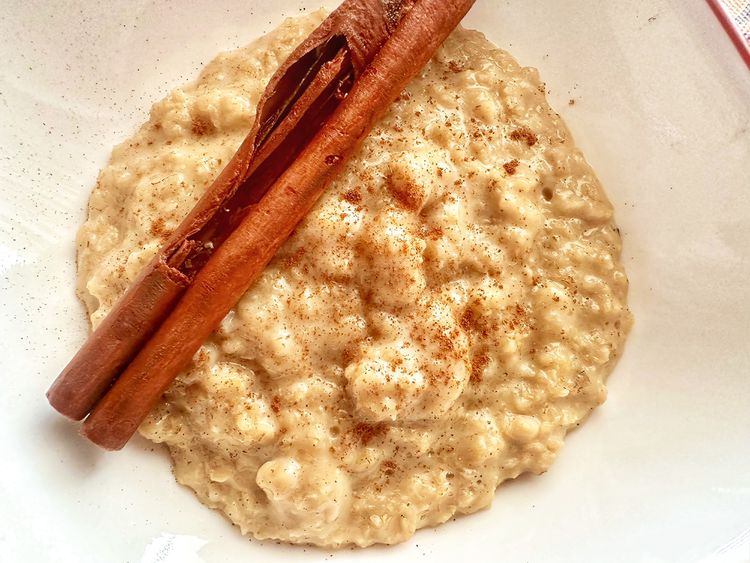

Mexican Oatmeal

Desciption
This Mexican oatmeal brings back memories of when my mother made it for us when we were kids. Made with milk, cinnamon, and vanilla, it’s sweet, creamy, and comforting.
Ingredients
- 1 cup water
- 1 Mexican cinnamon stick
- 1/2 cup quick-cooking oats
- 1/2 cup milk
- 1 tablespoon piloncillo, or to taste
- 1/2 teaspoon ground cinnamon
- 1/2 teaspoon vanilla extract
Steps
- Bring water and cinnamon stick to a boil in a saucepan. Reduce heat and simmer for 5 minutes.
- Add oats and cook for 1 minute. Add milk and cook until thickened, 1 to 2 minutes. Remove from heat. Stir in piloncillo, cinnamon, and vanilla.
Home